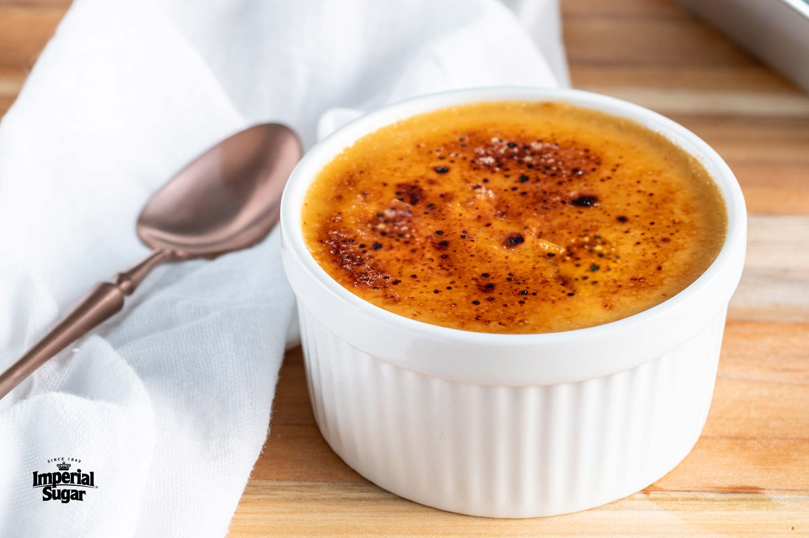

Vanilla Crème Brûlée

Crème Brûlée is an elegant dessert made of 5 simple ingredients. Contrary to popular belief this is not a difficult dish to make.
Ingredients
- 2 cups light/heavy cream
- 1 vanilla bean or 1 teaspoon vanilla extract
- 1 teaspoon salt
- 5 egg yolks
- half a cup of sugar, more for the topping
Instructions
- Heat oven to 160 degrees celcius. In a saucepan combine the cream, vanilla bean and salt. Cook over low heat until just hot. After letting it sit for a few minutes the vanilla bean can be discarded. If vanilla extract is being used instead it should be added at this point.
- In a bowl, beat yolks and sugar together until light. Stir in roughly a quarter of the cream, then pour in the sugar-egg mixture into the cream and stir.
- Pour into four ramekins and place them into a baking dish. Fill the baking dish with boiling water halfway up to the sides of the dishes.
- Bake for 30-40 minutes or until the centers are barely set. Cool completely, then refrigerate for several hours.
- When ready to serve, top each custard with about a teaspoon of sugar in a thin layer. Place ramekins in a broiler 2 to 3 inches from heat source. Turn on broiler. Cook until sugar melts and browns or even blackens a bit, about 5 minutes. Serve within two hours.